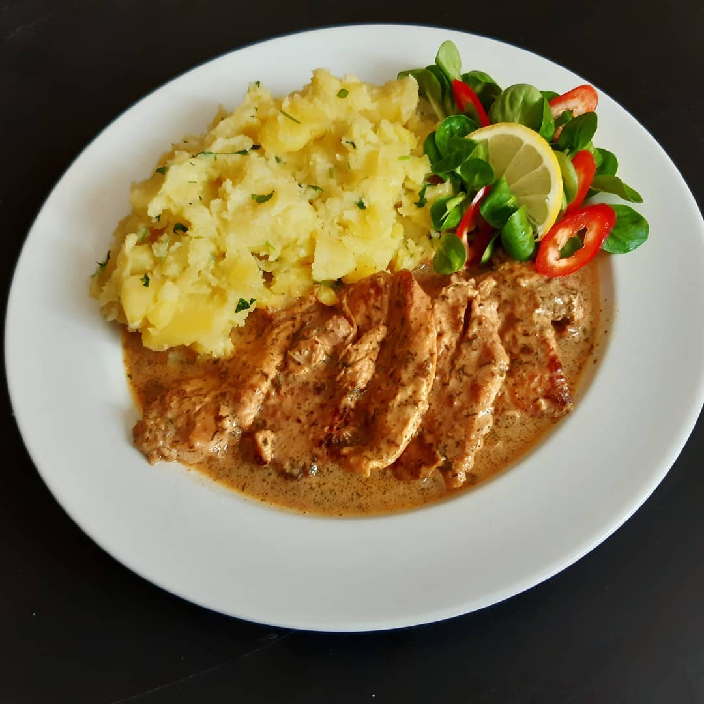

Horčicová omáčka podľa @jajfil — Normy Jedál
Bravčové kúsky na prírodno a kôprovo-dijonska omáčka
---------------------------------------------------------------------------
Ingrediencie
700 bravčové mäso
3 pl horčica dijon alebo plnotučná
200 ml voda
100 ml šľahačková smotana
1 pl hladká múka
1 pl sekaný kôpor
Soľ
Čierne mleté korenie
50 g bravčová masť
Postup
Mäso umyjeme, nakrájame na plátky a trocha naklepeme. Osolimw, okoreníme, potrieme horčicu a zľahka obalíme v hladkej múke. Na dno tlakového hrnca si dáme bravčovú masť, necháme rozpáliť a plátky postupne zprudka opečieme. Ked sú všetky opečené vrátime späť, podlejeme vodou, zavrieme tlakový hrniec a od momentu syčania varíme 20 min.
Keď je mäsko hotové, vyberieme ho. Do omáčky nalejeme smotany, nasypeme kôpor a necháme prevariť. Podľa hustoty pridáme vodu a osolíme. Vrátime mäsko späť. Podávame so zemiakmi, alebo ryžou alebo šalátom.
#pork#sauce#dill#mustard#Dijonmustard#naturally#lunch#meat#home#cooking#recipe#recept#food#meal#tasty#brancove#jedlo#kopor#horcicovaomacka#